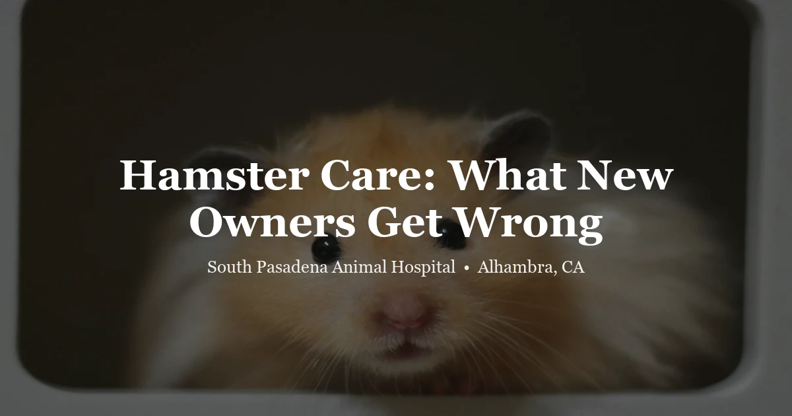

May 8, 2026 · 7 min read
Hamster Care: What New Owners Often Get Wrong

Hamsters are often purchased as "starter pets" — small, inexpensive, easy. But there's a significant gap between how they're marketed and what they actually need to thrive. We see hamsters at our Alhambra clinic regularly, and most of the health and behavioral problems we encounter trace back to housing that's too small, no wheel, or both.
This isn't complicated care. But there are a few things that matter a lot, and most pet store advice gets them wrong.
The housing problem
The single most common issue we see with hamster owners: the cage is way too small. Pet stores routinely sell cages sized 10–15 inches long as "hamster cages." Those are not appropriate for most hamster species. In the wild, Syrian hamsters cover miles each night. The minimum recommended floor space is 450 square inches of unbroken floor space — that's roughly a 40-gallon breeder tank (36" x 18").
Signs that a hamster is under-housed: bar-chewing obsessively, repetitive back-and-forth pacing, spinning in place without a wheel present, or extreme aggression. These are stress behaviors. Bigger housing almost always resolves them.
The most practical affordable option we see working well: large plastic storage bins (40+ gallon capacity) with ventilated mesh lids. They're inexpensive, easy to clean, and provide real space. Tank cages work well too. Small plastic "hamster mansions" with multiple tubes and levels — despite looking elaborate — rarely provide adequate floor space.
Bedding depth matters
Hamsters are burrowers. They need deep bedding — at least 6 inches, ideally 8–12 inches in part of the cage — to exhibit natural burrowing behavior. Compressed paper bedding (like Carefresh) or kiln-dried aspen shavings work well. Avoid cedar and pine (toxic aromatic oils). Avoid scented bedding. A hamster that can't burrow is a stressed hamster.
The wheel is not optional
Hamsters run 5–8 miles per night in the wild. In captivity, without an appropriate wheel, they have no outlet for this energy. The result is repetitive stress behavior, frustration, and poor physical health.
The wheel must be:
- Appropriately sized: At least 8 inches for Syrian hamsters, 6.5 inches for dwarf species. A hamster running on a wheel that's too small will arch its back, which causes long-term spinal strain.
- Solid-surfaced: Wire/mesh wheels cause leg injuries (bumblefoot, broken toes). Use a solid plastic or wooden wheel.
- Silent or near-silent: These animals are nocturnal — they'll run all night. Squeaky wheels are both cruel to the hamster and annoying to everyone in the room.
Diet
Hamsters are omnivores but their diet in captivity is simpler than many people think. A quality seed-and-grain hamster mix (not gerbil food, not generic "rodent" mix, but hamster-specific with a variety of grains, seeds, and legumes) forms the base. Scatter-feed it in the bedding rather than bowl-feeding — foraging is mentally stimulating and closer to natural behavior.
Fresh foods can be offered in small amounts (a teaspoon or less, 2–3 times per week):
- Good options: broccoli, cucumber, zucchini, cooked plain chicken or egg (small piece), leafy greens
- Avoid: citrus fruits, onions, garlic, raw potatoes, anything with high sugar content, and most processed foods
Remove uneaten fresh food after a few hours. Hamsters will hoard food — check the hoard periodically for rotting items.
Temperature and environment
Hamsters do well at temperatures between 65–75°F. Below 60°F, they can enter torpor — a state resembling hibernation that's actually dangerous for domesticated hamsters (unlike true hibernation in wild species). Above 80°F, they're at risk for heat stroke. In Southern California summers, this is a real concern. Keep hamsters out of direct sunlight and away from windows that heat up during the day.
Hamsters are also sensitive to noise and vibration. Don't house them near speakers, televisions, or in rooms with heavy foot traffic if you can avoid it.
Handling and socialization
Syrian hamsters are solitary animals. They must be housed alone — two Syrian hamsters together will fight, and that fighting will eventually be fatal. This is not a matter of opinion or individual animal temperament. It's species biology.
Dwarf hamster species (Roborovski, Campbell's, Russian winter white) can sometimes be housed in same-sex pairs if introduced together from a young age, but even then, fighting is possible and they must be monitored and separated at the first sign of aggression.
Hamsters are nocturnal. They'll be asleep during the day, and waking them up is stressful and often leads to biting. The best time to interact with a hamster is in the evening, after they've naturally woken up. Don't force daytime handling — especially with children.
Common health problems
Wet tail
Wet tail (proliferative ileitis) is a bacterial infection of the intestinal tract that's particularly common in young Syrian hamsters under significant stress — usually from weaning, transport, or environmental changes right after purchase. Signs: watery diarrhea, soiled hindquarters, severe lethargy, hunched posture, refusal to eat. This is fast-moving. A hamster with wet tail can decline and die within 24–48 hours. Same-day vet visit. Not something to monitor at home.
Dental problems
Hamsters have continuously growing incisor teeth. Overgrown or broken teeth cause difficulty eating and weight loss. Signs: dropping food, pawing at mouth, weight loss despite seeming to eat. We can file or trim overgrown teeth and address broken ones.
Skin masses and tumors
Unfortunately common in older hamsters. Hamsters are prone to a variety of skin cysts and tumors. A new lump or growth is worth a vet visit — some are benign cysts, some are more serious. Because hamsters have short lifespans, acting quickly matters.
Respiratory infections
Wheezing, labored breathing, nasal discharge, and lethargy indicate a respiratory infection. These can progress quickly in small animals. Prompt veterinary care is important.
When to come in
Given how short hamster lifespans are and how quickly small animals can decline, our threshold for "come in" is lower than for dogs and cats. See a vet if:
- Any signs of wet tail (diarrhea, soiled tail, lethargy)
- Not eating or drinking for more than 24 hours
- Any new lumps or swellings
- Respiratory changes
- Significant weight loss
- Any injury
We see hamsters and other small exotic mammals at South Pasadena Animal Hospital in Alhambra. Learn more about our hamster veterinary care, visit our exotic exams page, or call (626) 441-1314 to schedule a visit.
Frequently Asked Questions
What size cage does a hamster really need?
At least 450 square inches of unbroken floor space — roughly a 40-gallon breeder tank or a large bin cage. The small "hamster cages" sold in pet stores are generally too small for a healthy, low-stress life.
Can I keep two hamsters together?
Syrian hamsters: no, never. They are solitary animals and will fight seriously if housed together. Dwarf species can sometimes coexist in same-sex pairs introduced early, but fighting is still possible and they must be watched.
What is wet tail and is it an emergency?
Wet tail is a serious bacterial infection most common in young Syrian hamsters. Signs include diarrhea, wet/soiled rear end, lethargy, and hunched posture. It progresses very rapidly — this is a same-day vet visit situation, not something to monitor overnight.
Do hamsters need veterinary care?
Yes. Because their lifespan is short and they hide illness well, any noticeable change warrants a vet visit. Dental problems, skin tumors, respiratory infections, and wet tail are all things we regularly treat. A vet experienced with exotic small mammals will give a hamster a proper exam.